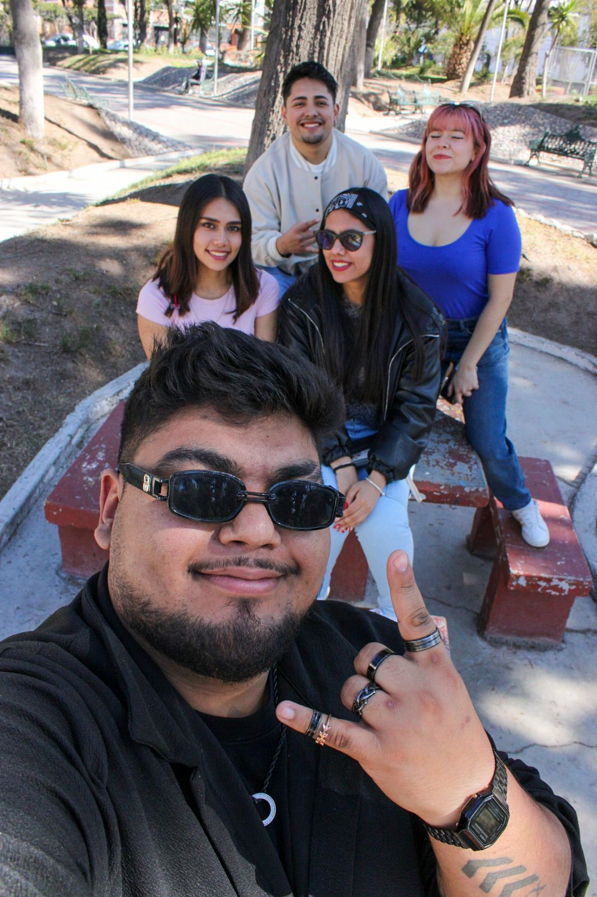
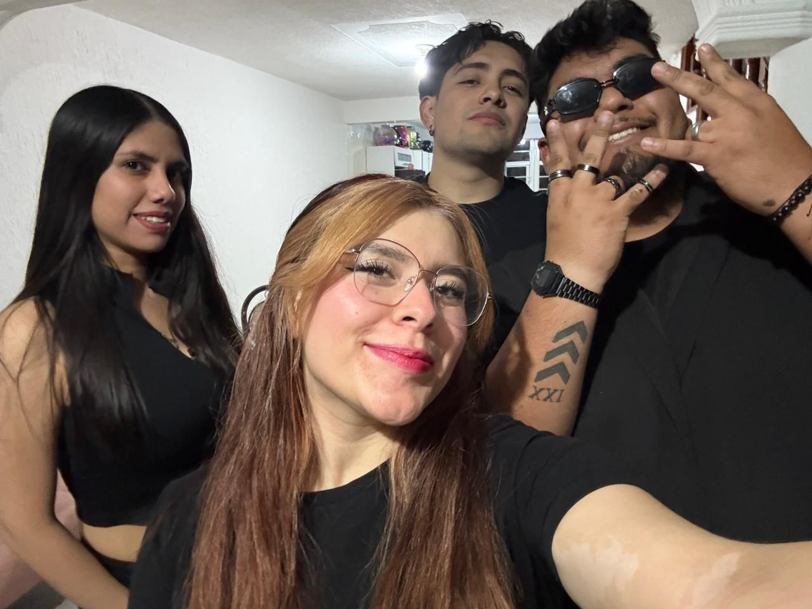
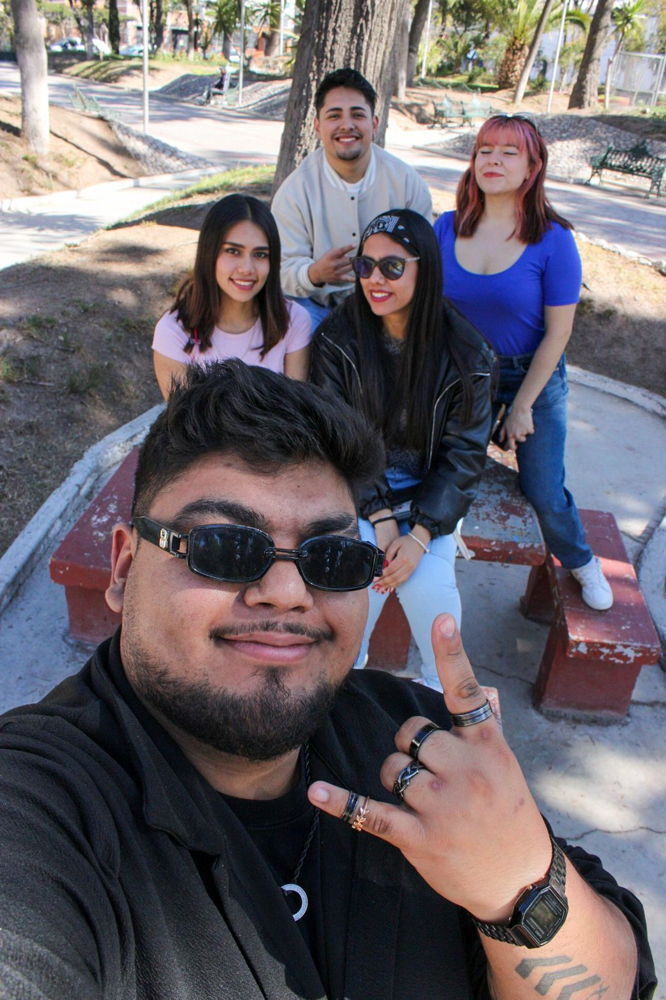
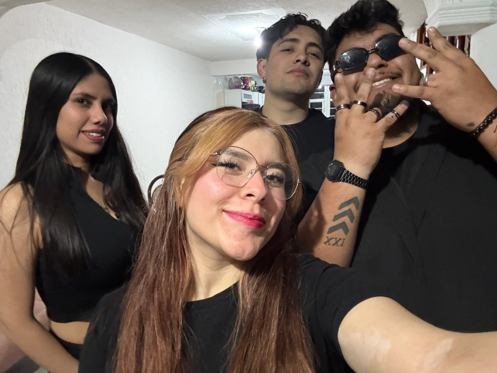
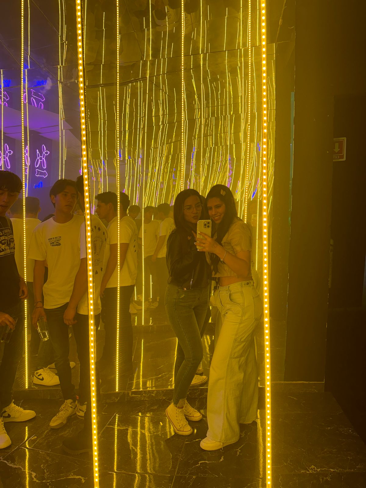
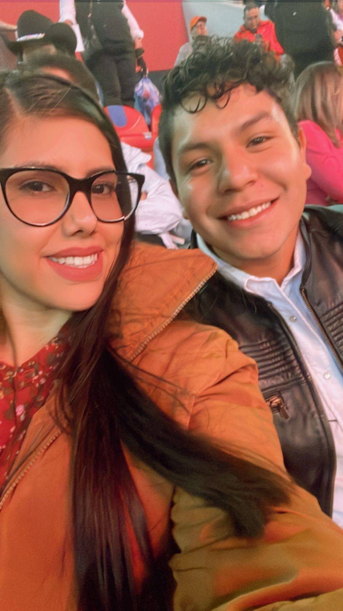
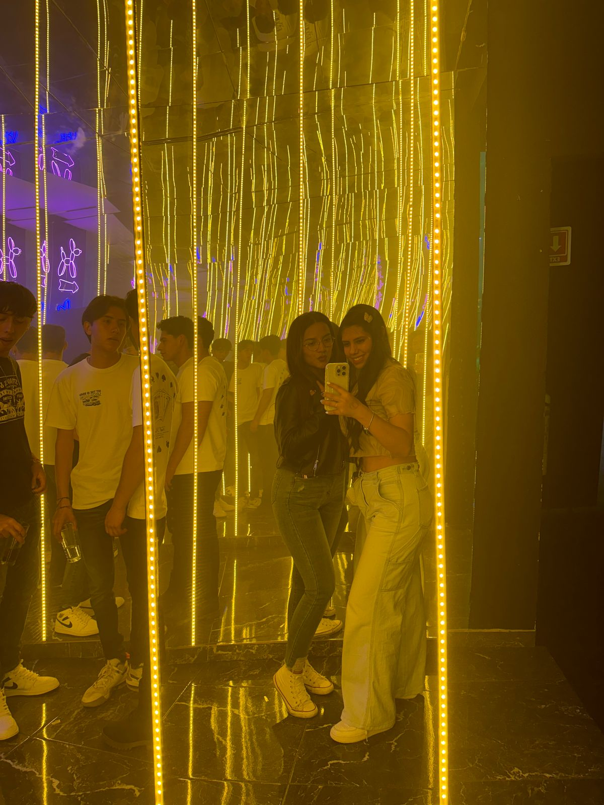
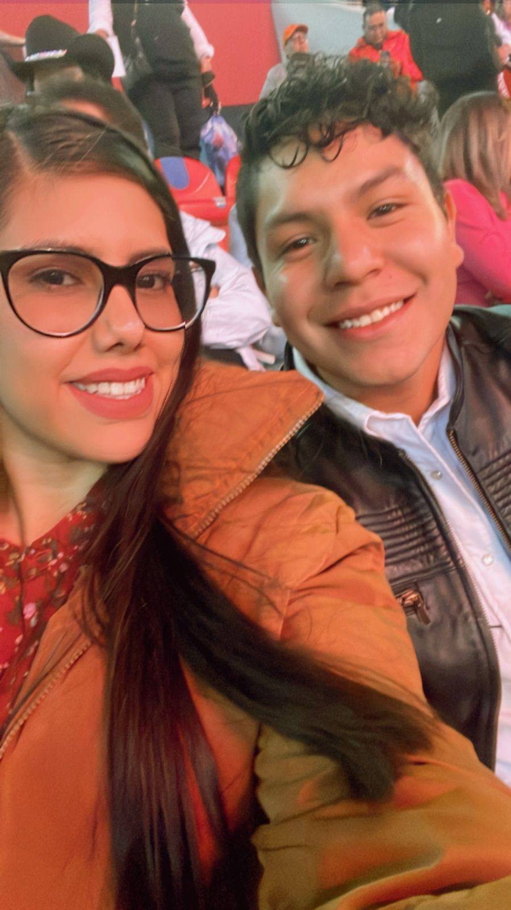

Formación Académica
Taller: Ofimatica - Secundaria Técnica 39 "Jesus Reyes Heroles"
Técnico en Redes de Computo - CET 1 "walter Cross Buchanan", IPN
Ingeniería en Sistemas Computacionales - ESCOM, IPN
Actualmente
Estudiante de Ingeniería en Sistemas Computacionales
Mis Pasatiempos Favoritos
Jugar con mis perritos
Disfruto pasar tiempo con mis perritos, sacarlas a pasear y jugar con ellas.

Futbol
Me gusta ver el futbol e ir a los estadios
 



 



Amigos
Salir o estar con mis amigos es una de las cosas que mas disfruto en mis tiempos libres
Hechos curiosos sobre la Criptografía
Última actualización: 2024
Criptografía Cuántica
La criptografía cuántica no puede ser interceptada sin ser detectada. Gracias al principio de la superposición cuántica, cualquier intento de espiar altera los datos, por lo que se detecta inmediatamente.
Origen del término: Siglo XX
Criptoanálisis
El término “criptoanálisis” significa romper códigos. Es el arte de estudiar los sistemas criptográficos y encontrar vulnerabilidades. Los criptógrafos crean; los criptoanalistas rompen.
Década de 1940
Máquina Enigma
La máquina Enigma fue clave en la Segunda Guerra Mundial. Usada por los nazis para cifrar mensajes, fue descifrada por Alan Turing y su equipo en Bletchley Park, lo que acortó la guerra y salvó millones de vidas. ocupare estas 3 para mis paginas pero para mi card que puedo poner en cada uno en fecha y span.